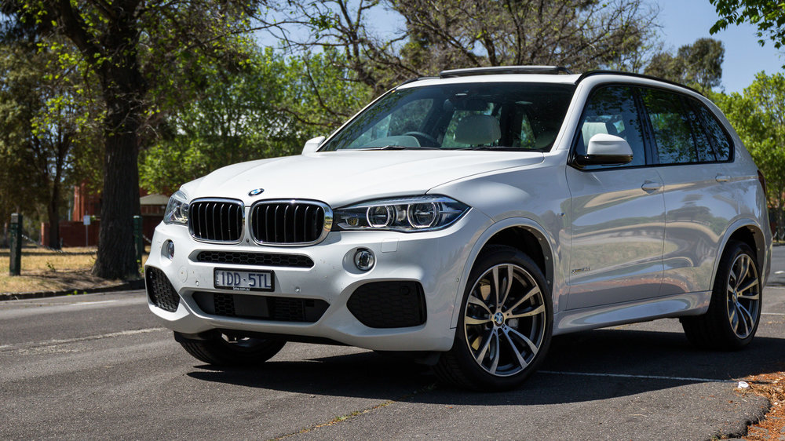
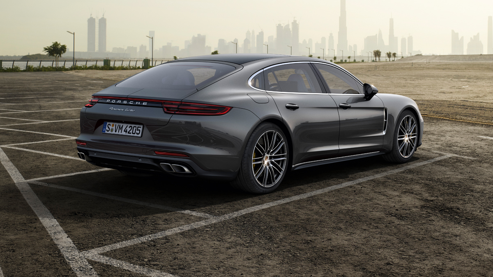

|  | The BMW X5 is a mid-size luxury crossover produced by BMW. The first generation of the X5, with the chassis code E53, made its debut in 1999. It was BMW's first SUV and it also featured all-wheel drive and was available with either manual or automatic transmission. In 2006, the second generation X5 was launched, known internally as the E70, featuring the torque-split capable xDrive all-wheel drive system mated to an automatic transmission, and in 2009 the X5 M performance variant was released as a 2010 model. |
||
|  | The Porsche Panamera is a luxury four-door sedan. It is front-engined with two-wheel drive, with all-wheel drive versions also available. The Porsche Panamera production model was unveiled at the 13th Auto Shanghai International Automobile Show in Shanghai, China, on April 2009. In 2011, hybrid and diesel versions were launched. In April 2013, a facelift to the Panamera was announced, launching again at the Auto Shanghai show. A plug-in hybrid version, the Panamera S E-Hybrid, was released in the U.S. market in November 2013. |
||